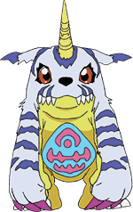
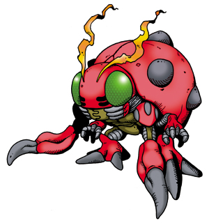

Welcome to the Digidex!
Contained here is a list of all currently known digimon. As our knowledgell expends, so too will this list.
| List of known Digimon | ||||
|---|---|---|---|---|
| Digimon Name | Profile picture | Level | Attribute | Description |
| Agumon |  |
Rookie | Vaccine | Agumon is a Reptile Digimon. It has grown up and become able to walk on two legs, and has an appearance like a tiny dinosaur. Since it is still on the way to adulthood, its power is low, but is totally fearless. It has sharp claws on both its hands and feet, and demonstrates its power in battle. |
| Gabumon |  | Rookie | Data,Vaccine | Gabumon is a Digimon whose name and design are derived from the "Gabu Kashira", a Kabuki puppet whose face instantly changes from that of a timid maiden to a horned fiend with the pull of a string. Due to its extremely timid and shy personality, it always gathers up the data which Garurumon leaves behind, and shapes it into a fur pelt to wear. Because it is wearing the fur pelt of Garurumon, who is feared by other Digimon, it fills the role of safeguarding itself as a result of protecting its body. When it is wearing the fur pelt, its personality does a complete 180° shift. |
| Palmon |  |
Rookie | Data,Vaccine | Palmon is a Vegetation Digimon whose name is derived from the palm tree (Phoenix dactylifera) and whose design is derived from the mythological Mandrake. It has a tropical flower blooming on its head. As a Vegetation Digimon, it gets along with FanBeemon. During the day it opens up the flower and spreads its leaf-like arms to perform photosynthesis. It usually buries its root-like feet under the ground, and although it is absorbing nutrients, it is also able to walk. As for the flower on its head, when it is joyful or happy it will waft about a sweet fragrance, but when it is angered or senses danger, it releases a foul stench that will drive off even large Digimon. |
| Tentomon |  | Rookie | Vaccine | Tentomon is an Insectoid Digimon whose name and design are derived from the ladybug (Harmonia axyridis). It is the original type of Insectoid Digimon who, although it has a hard shell, still has low aggression. It has one hard claw on each of its fore-legs, and four on each of its middle- and hind-legs, and in particular, the middle-legs are able to skillfully grasp objects just like a human hand. Although the other Insectoids at its Digivolution level only possess fighting spirit, it still retains its naturally friendly sentiments, and displays its carefree way of life by doing things like sniffing the scent of flowers and napping in the shade of a tree. |